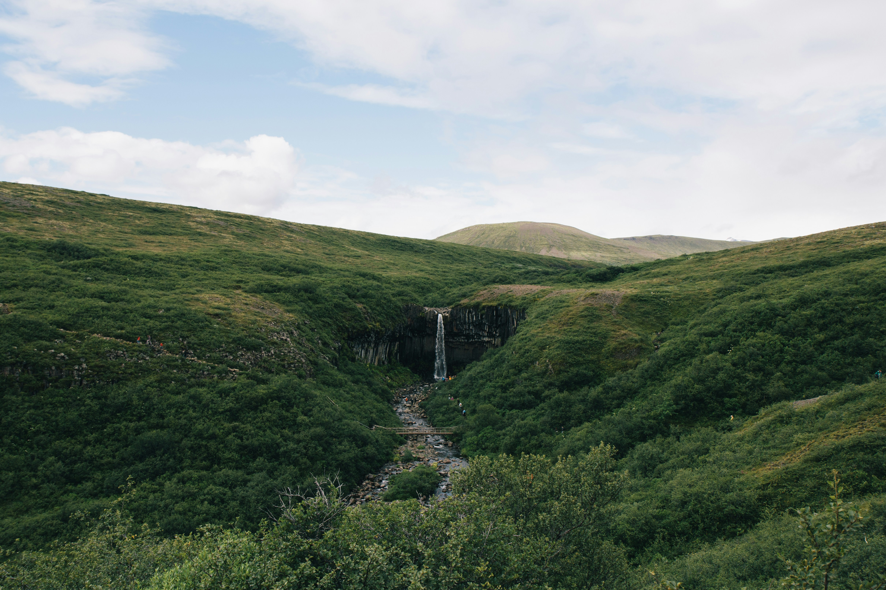
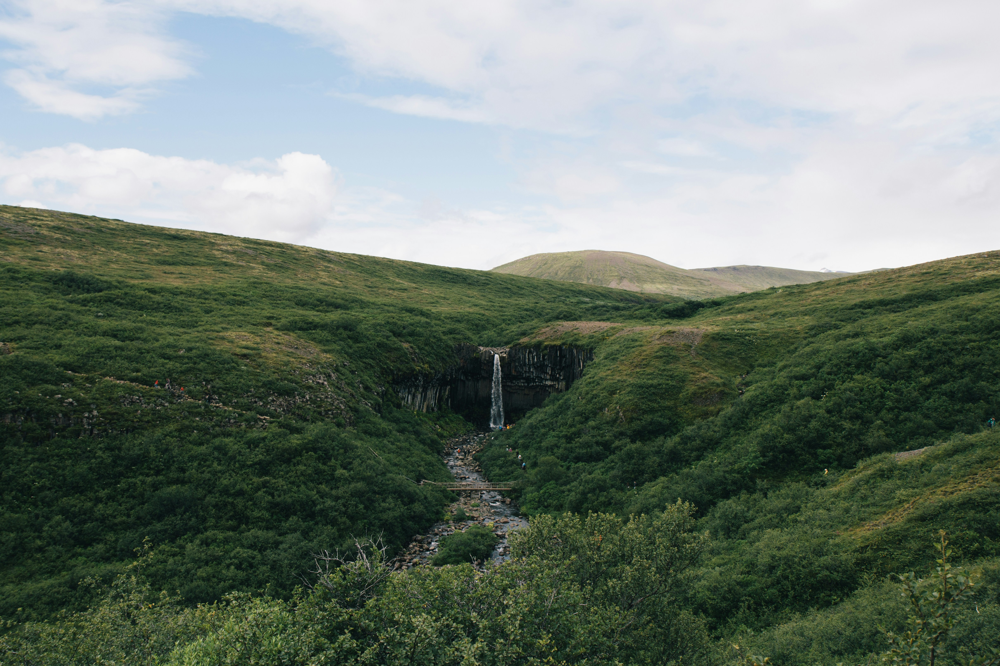

Nestled along the Caribbean Sea in the colorful country of Panama lies the secret paradise of San Blas Island. Boasting crystal clear waters and pristine white sands, the secluded beaches of San Blas Island offer a serene and picturesque getaway for travelers seeking a break from the hustle and bustle of everyday life. The indigenous Kuna people who reside on the island have preserved their traditional way of life and warmly welcome visitors to experience their culture. Visitors can indulge in a variety of activities, including snorkeling, kayaking, island hopping and enjoying beach resorts — all while taking in the breathtaking beauty of this tropical oasis. The San Blas Island is undoubtedly one of the top undiscovered destinations around the world that every traveler must experience at least once in their lifetime.Guna Yala is an indigenous territory governed by the Guna indigenous group. The territory consists of a narrow strip of land on the Caribbean side of the country, as well as an archipelago of 365 islands, of which only 50 are inhabited by Guna people. The islands in Guna Yala are also known as the San Blas Islands, which are considered a top destination in Panamá due to their well-protected natural beauty, as stewarded by the native Guna people. The Gunas are known for crafting the famous Molas, a traditional textile made from layers of colored fabric crafted to form patterns and pictures inspired by their cosmogenic beliefs. The molas, which recreate the Guna vision of a colorful and mythological world, make incredible, one-of-a-kind souvenirs. A trip to Guna Yala won’t look like any commercial vacation you’ve experienced in the past. Instead, you’ll get to embrace the local customs and cuisine. Keep in mind, there’s no internet access, or credit card payments, and US dollars are the only acceptable form of payment. Expect to lodge in thatched huts without heated water, or go the camping route, by renting tents or hammocks. One of the most popular places to stay, however, is aboard a sailboat. This option will allow you to sail from island to island, rather than just choosing one.